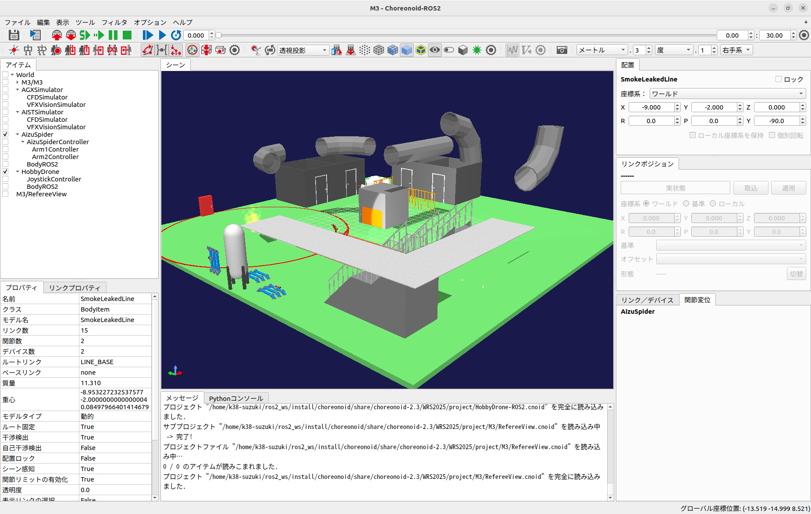

競技環境の構築（本大会）***編集中（2025/05/01更新）***¶
ここでは、WRS2025本大会の競技環境の構築の仕方を説明します。この機能は、競技環境の読込とロボットモデルの配置を自動的に行うためのものです。 2025/04現在、本大会の競技環境はまだ非公開のため、公開となるまでは以下の練習環境を用いて競技参加の準備をお願いします。 この機能を使用するには こちら のパッケージが必要です。 なお、このページに記載した内容は、競技環境の開発状況により変更になる場合があります。
練習環境の読込（基本編 - コマンドラインでの読込）¶
以下のコマンドでChoreonoidを起動してください。 ChoreonoidをROS2環境で使用している場合は、
$ ros2 run choreonoid_ros choreonoid ~/ros2_ws/src/choreonoid/ext/WRS2025/registration/registration_m3.yaml --wrs-util <mission_name>
Choreonoidを単体で使用している場合は、（例：choreonoid/build内で）
$ ./bin/choreonoid ../ext/WRS2025/registration/registration_m3.yaml --wrs-util <mission_name>
と入力してください。 <mission_name>で指定できる引数は以下のとおりです。
引数
詳細
M3
練習環境を読み込みます。デフォルトでAizuSpiderDAとHobbyDroneを配置します。
練習環境に自作のロボットを配置したい場合は、以降に記述する 練習環境の読込（応用編） の作業を行い、WRS2025/registration以下に格納されているregistration_m3.yamlを直接またはコピーしてから robot_list のパラメータを編集してください。コピーした場合は、Choreonoidを起動するときの引数でコピーしたファイルを指定するようにしてください。
練習環境の読込（基本編 - GUIでの読込）¶
前のセクションでは、コマンドラインを使って練習環境を読み込む方法を説明しました。コマンドラインでの操作に慣れていない、または不安がある場合、GUIを使ってコマンドを使った場合と同様に練習環境を読み込むこともできます。具体的な手順は以下のとおりです。
まず、メインメニューの「表示」-「ツールバーの表示」から「WRSUtilバー」を選択して、チェックを入れます。
チェックを入れると、以下のWRSUtilバーがツールバーに表示されます。
次に、WRSUtilバーの
のアイコンをクリックして、表示されたダイアログで、~/ros2_ws/src/choreonoid/ext/WRS2025/registration/registration_m3.yamlを選択して、ファイルを開きます。
YAMLファイルが読み込まれると、WRSUtilバーのコンボボックスが更新され、以下のように表示されます。
ここでは、YAMLファイルによって設定されたプロジェクト「M3」がコンボボックスに登録されており、選択された状態になっています。YAMLファイルに他のプロジェクトが設定されている場合は、コンボボックスで任意のものを選択することができます。
次に、WRSUtilバーの
のアイコンをクリックして、練習環境を読み込みます。読み込みが完了すると、以下のように表示されます。（ 実際の表示と若干異なる場合があります ）
以上で、練習環境の読込は終了です。
練習環境の読込（応用編）¶
ここでは、上述の練習環境の読込の際に自作のロボットモデルを配置できるようにするための手順を説明します。 主な手順は次のとおりです。
ロボットモデルのコピー
プロジェクトの作成
YAMLファイルの作成
Choreonoidの起動
ロボットモデルのコピー¶
まず、choreonoid/ext/WRS2025/model以下に任意の名前（例：model_<チーム名>）のディレクトリを作成して、 そのディレクリ内に自作のロボットモデルのファイルやディレクトリを全てをコピーしてください。
次に、Choreonoidをリビルドしてください。 ChoreonoidをROS2環境で使用している場合、リビルドするときに追加したファイルが認識されない場合があります。 そのときは、オプション”–cmake-clean-cache”を追加してください。
リビルドが完了したら、ChoreonoidをROS2環境で使用している場合は、ros2_ws/install/choreonoid/share/choreonoid-x.x/WRS2025/model以下、 Choreonoidを単体で使用している場合は、choreonoid/build/share/choreonoid-x.x/WRS2025/model以下を確認します。 choreonoid-x.xは、使用しているChoreonoidのバージョンに読み替えてください。
ディレクトリ内に前述の手順で作成したディレクトリ（例：model_<チーム名>）があれば、この手順は終了です。
プロジェクトの作成¶
ここでは、ロボットモデルを保存したプロジェクトを作成します。 Choreonoidを起動して、ChoreonoidをROS2環境で使用している場合は、ros2_ws/install/choreonoid/share/choreonoid-x.x/WRS2025/model以下、 Choreonoidを単体で使用している場合は、choreonoid/build/share/choreonoid-x.x/WRS2025/model以下の自作のロボットモデルを読み込んでください。 choreonoid-x.xは、使用しているChoreonoidのバージョンに読み替えてください。
自作のロボットモデルを読み込んだら、必要なシンプルコントローラ等を全て設定してください。
ChoreonoidをROS2環境で使用している場合で、カメラやレンジセンサ等のデバイスが取得した情報をパブリッシュするときは、 ロボットモデルの子アイテムにBodyROS2アイテムを追加してください。
設定が完了したら、ChoreonoidをROS2環境で使用している場合は、ros2_ws/src/choreonoid/ext/WRS2025/project以下、 Choreonoidを単体で使用している場合は、choreonoid/ext/WRS2025/project以下に任意の名前（例：project_<チーム名>）のディレクトリを作成して、 そのディレクトリ内にプロジェクト(.cnoid)を保存します。プロジェクトは、自作のロボットモデルの名前で保存してください。 ここで保存したプロジェクトの名前を後述の”YAMLファイルの作成”で使用します。
次に、Choreonoidをリビルドしてください。ChoreonoidをROS2環境で使用している場合、リビルドするときに追加したファイルが認識されない場合があります。 そのときは、オプション”–cmake-clean-cache”を追加してください。
リビルドが完了したら、ChoreonoidをROS2環境で使用している場合は、ros2_ws/install/choreonoid/share/choreonoid-x.x/WRS2025/project以下、 Choreonoidを単体で使用している場合は、choreonoid/build/share/choreonoid-x.x/WRS2025/project以下を確認します。 choreonoid-x.xは、使用しているChoreonoidのバージョンに読み替えてください。
ディレクトリ内に前述の手順で作成したディレクトリ（例：project_<チーム名>）があれば、この手順は終了です。
YAMLファイルの作成¶
練習環境の読込に使用するYAMLファイルを作成します。 ここでは、WRS2025/registration以下に格納されているregistration_m3.yamlをテンプレートとして利用します。 registration_m3.yamlを任意のディレクトリにコピーして、任意の名前（例：registration_m3_<チーム名>.yaml）に変更してください。
任意のテキストエディタでそのYAMLファイルを開き、2行目を以下のように書き換えてください。
robot_list: &RobotList [ 作成したディレクトリの名前/自作のロボットモデルを保存したプロジェクトの名前 ]
例えば、<チーム名>が”team1”で、ディレクトリの名前が”project_team1”、 前述の手順で保存したプロジェクトの名前が”my_robot.cnoid”の場合は
robot_list: &RobotList [ project_team1/my_robot ]
というように書き換えます。
自作のロボットモデルの他に、標準で以下のロボットモデルを使用できます。
プロジェクトの名前
詳細
AizuSpiderDA-ROS2
AGXシミュレータ向けのAizuSpiderDS。 AizuSpiderDSは、ROS2のsensor_msgs::msg::Joyの/joyトピックをサブスクライブします。
AizuSpiderDS-ROS2
AISTシミュレータ向けのAizuSpiderDS。 AizuSpiderDSは、ROS2のsensor_msgs::msg::Joyの/joyトピックをサブスクライブします。
MonoCrawlerNA-ROS2
AGXシミュレータ向けのMonoCrawler。 MonoCrawlerは、ROS2のsensor_msgs::msg::Joyの/joyトピックをサブスクライブします。
MonoCrawlerNS-ROS2
AISTシミュレータ向けのMonoCrawler。 MonoCrawlerは、ROS2のsensor_msgs::msg::Joyの/joyトピックをサブスクライブします。
HobbyDrone-ROS2
HobbyDrone。 HobbyDroneは、ROS2の sensor_msgs::msg::Joyの/joy2 トピックをサブスクライブします。
SampleDrone-ROS2
SampleDrone。 SampleDroneは、ROS2のgeometry_msgs::msg::Twistの/cmd_velトピックをサブスクライブします。 この引数を使用するにはROS2パッケージ choreonoid_ros2_sample_drone_tutorial が必要です。
例えば、ROS環境で使用できるAGXシミュレータ向けのAizuSpider（AizuSpiderDA-ROS2）を自作のロボットモデル（my_robot）と同時に使用する場合は、 YAMLファイルの1行目を以下のように書き換えてください。
robot_list: &RobotList [ project_team1/my_robot, AizuSpiderDA-ROS2 ]
この設定で練習環境を読み込んだ場合、my_robotが左側、AizuSpiderDAが右側に配置されます。 配置を入れ替える場合は、順番を入れ替えて次のように書き換えてください。
robot_list: &RobotList [ AizuSpiderDA-ROS2, project_team1/my_robot ]
YAMLファイルを保存したら、この手順は終了です。
Choreonoidの起動¶
Choreonoidを起動します。
以下のコマンドでChoreonoidを起動してください。 ChoreonoidをROS2環境で使用している場合は、
$ ros2 run choreonoid_ros choreonoid <path/to/yaml> --wrs-util <mission_name>
Choreonoidを単体で使用している場合は、（例：choreonoid/build内で）
$ ./bin/choreonoid <path/to/yaml> --wrs-util <mission_name>
と入力してください。 引数の順番に注意してください。 <path/to/yaml>には、前述の手順で作成したYAMLファイルまでのパスを引数として入力してください。 <mission_name>で指定できる引数は以下のとおりです。
引数
詳細
M3
練習環境を読み込みます。
Choreonoidを起動したときに、ロボットモデルの配置がズレている場合は、 start_positionで初期位置の座標[ x, y, z ]を調整してください。 ここで、座標はメートル単位で指定します。
以上で、練習環境の読込は終了です。
最後に¶
上記の練習環境を保存したプロジェクトも用意しています。
WRS2025/project/M3/M3-NoROS2.cnoid
WRS2025/project/M3/M3-ROS2.cnoid
これらのプロジェクトは「メインメニュー」-「プロジェクトを開く」から簡単に読み込みできますので、練習環境の確認等にご利用ください。